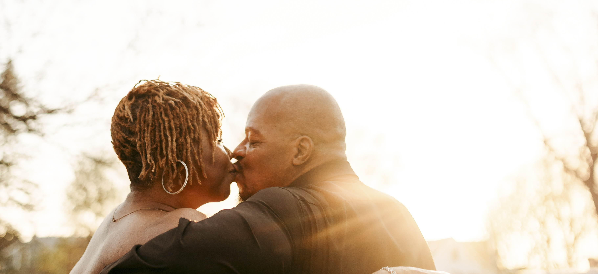

Our Story
Every great love begins with an unexpected conversation.
Gary and I met while debating politics on social media. I had a podcast, and Gary was an anonymous caller and listener whose intellect immediately caught my attention. I secretly hoped he would call in with one of his tough questions because I wanted more time to engage with his vibe and conversation. I was already feeling his mind, and that back-and-forth intellectual banter made me want more. It was incredibly charming and sexy to me.
I made the first move. At the time, I was raising my son, and Verona was busy raising teenagers, working, and attending school. We both were simply trying to keep everything afloat. I was rather persistent. I knew I needed to have her in my life from the very first deep conversation that ended in giggles over the movie "Lincoln." I looked forward to connecting with her several times a day. Eventually, I arranged for us to meet in Chicago for my birthday. It was the best birthday because Verona was my special gift.
Years later, beneath the stars aboard the Creole Queen in New Orleans, we said yes not only to a wedding, but to continue doing life together — with love, laughter, legacy, family, culture, faith, and limitless possibilities.